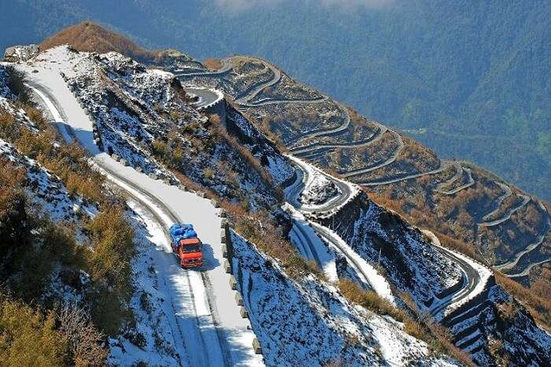

GANGTOK

Gangtok is the capital of the mountainous northern Indian state of Sikkim. Established as a Buddhist pilgrimage site in the 1840s, the city became capital of an independent monarchy after British rule ended, but joined India in 1975. Today, it remains a Tibetan Buddhist center and a base for hikers organizing permits and transport for treks through Sikkim’s Himalayan mountain ranges.
GOECHALA
Goecha La is a high mountain pass in Sikkim, India in the Himalaya range. The southeast face of Kanchenjunga, the world's third highest mountain, can be viewed from the pass, which is also a base camp for those aspiring to scale the mountain.
NATHULA PASS

Nathu La is a mountain pass in the Dongkya Range of the Himalayas between China's Yadong County in Tibet, and the Indian states of Sikkim and West Bengal in Bengal, South Asia. The pass, at 4,310 m, connects the towns of Kalimpong and Gangtok to the villages and towns of the lower Chumbi Valley.
PELLING
Pelling is a small town in the northeastern Indian state of Sikkim, at the foothills of Mount Khangchendzonga. The late-17th-century Buddhist Sanga Choling Monastery has mountain views. Pemayangtse Monastery features wall paintings, sculptures and a gold-plated statue of Guru Padsambhava. Overlooking a valley, the 17th-century Rabdentse Palace, now in ruins, still has evidence of the king’s bedroom and kitchen.
TEESTA RIVER
Teesta River is a 414 km long river that rises in the Pauhunri Mountain of eastern Himalayas, flows through the Indian states of Sikkim and West Bengal through Bangladesh and enters the Bay of Bengal. It drains an area of 12,540 km².
TSOMGO LAKE

Tsomgo Lake, also known as Tsongmo Lake or Changgu Lake, is a glacial lake in the East Sikkim district of the Indian state of Sikkim, some 40 kilometres from the capital Gangtok. Located at an elevation of 3,753 m, the lake remains frozen during the winter season.
ZULUK
Dzuluk or Zuluk or Jhuluk or Jaluk is a small hamlet located at a height of 9,400 feet on the rugged terrain of the lower Himalayas in Rongli Subdivision of Pakyong District, which lies in the Indian state Sikkim. This place is relatively an emerging and offbeat destination in East Sikkim.